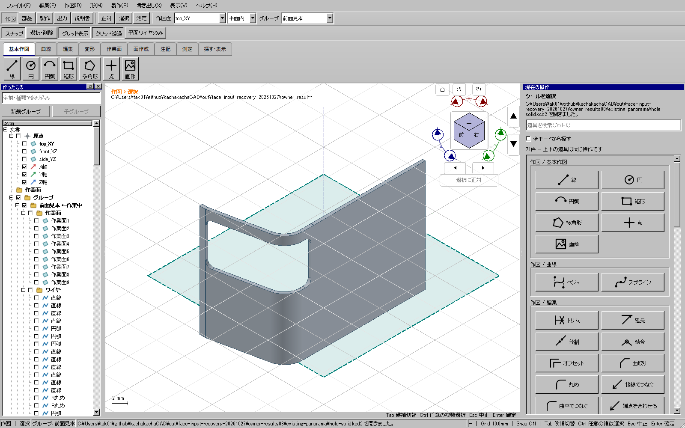
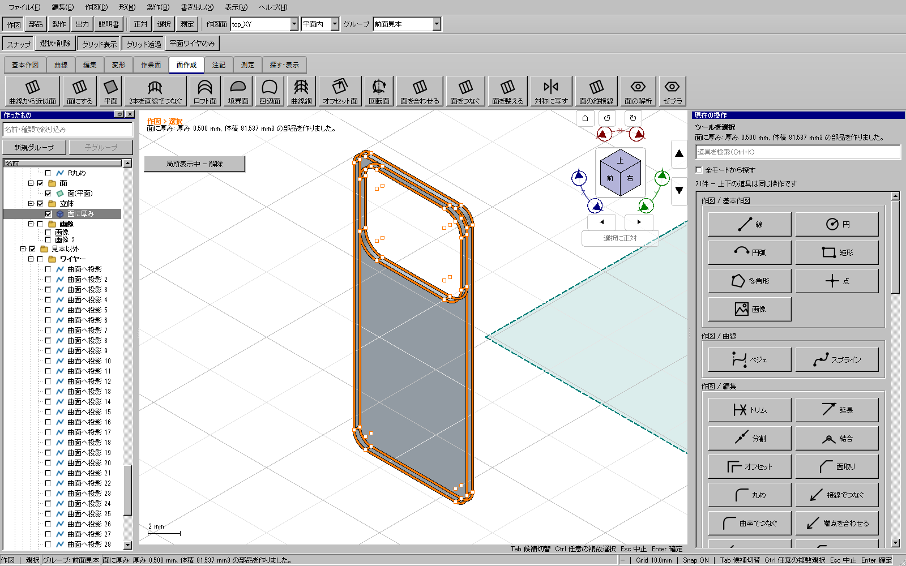
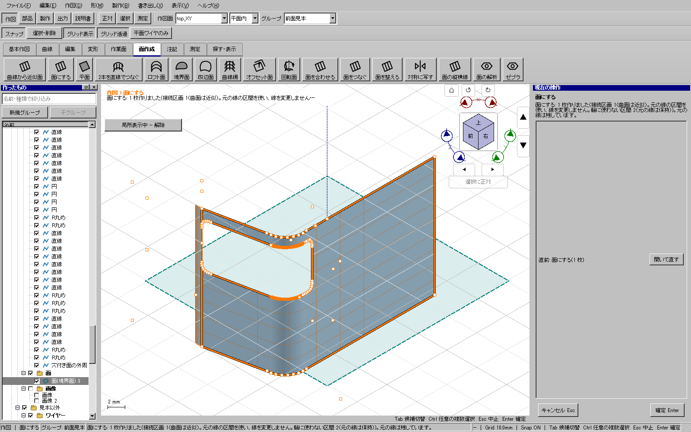
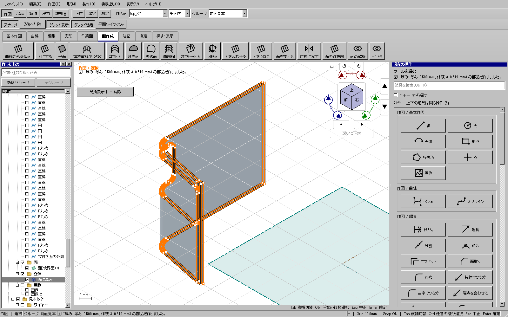

Windows全体ゲート成功（2026-10-27）。195 CTest、開発版／配布版UI各608件、旧アプリ自己試験が成功しました。全件の対象と実績、入力ソース、配布物とZIPのハッシュを正式な公開入口で再照合済みです。
実行中ツールでCtrlを押して選び足すと、任意の線を削除するための別の選択モードへ切り替わっていました。線の強調だけが変わり、元の面作成へ選択を渡さないため、輪一覧が空のままになっていました。
Ctrl追加をツールの入力に戻し、任意の選択・削除は上部の「選択・削除」から始めるようにしました。停止中は右側に件数と理由を示し、「選択を入力に使う」「元の入力へ戻る」を選べます。停止中の確定は無効にし、元の入力へ戻る操作と、新しい選択を渡す操作を区別します。
115投影.kcd2では、前面側・側面側から投影した同じ窓の一部が重なっていました。残る輪郭と今の許容内で重なる余りだけを面生成用の入力コピーから整理します。ワイヤーのID、元の曲線の種類・制御点は変更しません。許容値の自動拡大や、別の仕切線・開いた窓の無視は行いません。不確かな大きい入力は元の診断経路へ戻します。
窓が元の面の端と一致している部分では、閉じた穴を囲む材料を残すため、試験用の外周だけ中央側へ1 mm広げました。投影済みの窓線を作り直した試験ではありません。添付原本は上書きしません。
計算後の境界ワイヤー変換と表示メッシュ作成を、取消可能な専用計算プロセスへ移しました。受取側で既存の転送形式、識別子、件数、有限値、境界・形状・表示データの一致を検査します。確定時には下見のメッシュと境界線を引き継ぎ、同じものを画面側で再計算しません。完全に一致する形状・設定の結果だけを、容量と件数を制限したメモリー上のキャッシュから再利用します。平面・フェイスまでの厚みの既存経路、キャッシュ不一致の冷再構築は残ります。
独立したソリッド精密検査は、通常の操作で重複して実行する表示準備とは区別します。複雑な曲線を持つ左窓の精密検査は長く、この変更で全ての計算が即時になったとは扱いません。
実モデル試験は明示的な別試験として実行し、通常の全件試験に個人ファイルの環境変数を混入させません。Qt入力試験、Windows画面画像、OS入力、通常起動は同じ証拠ではありません。実行範囲は最終結果に併記します。
完成候補の正式な証拠は out/verification/face-input-final2-accepted-20261027/result.json、配布先は out/releases/face-input-final2-accepted-20261027/package/kachakacha_cad_next.exe です。開始2026-10-27 06:21:50、終了06:51:25（日本時間）、全体約29分35秒。CTestは1689.18秒、旧自己試験10.37秒。これは検証ゲートの所要時間で、今回の修正作業全体の所要時間ではありません。
配布exe SHA-256: 5654528664a23735d5a883bd18be2a397befb9d4b95a6feadece6ab31c59535f。正式証拠と公開先のファイルを照合しました。原本、旧配布物、他担当の未コミットモデル、worktreeは保全し、削除した既存ファイルはありません。
この配布exeを通常起動し、右窓の生成済みソリッドをキャッシュなしで開きました。17.77秒、Windowsプラットフォーム、表示・描画・イベントループ・終了コード0を確認。確認用に自動終了する起動試験であり、OSマウス操作の完了証拠とは区別します。記録は out/face-input-recovery-20261027/final-desktop/desktop.json です。

| 実行 | 結果・範囲 |
|---|---|
| perf-focused08 | 29件成功。面入力、厚み、文書読込、取消、保存、履歴。 |
| late-transfer09 | 17件中15成功・2失敗。全ツール入口と441切替、面入力等は成功。追加の転送試験だけ、試験輪郭のclosed指定漏れで失敗。全体成功とは扱わない。 |
| transfer-only10 | 試験輪郭の指定修正後、転送読込中の取消・切詰め破損の2件成功。 |
| final-focused11 | 31件成功。最後の測定値集計関数の抽出前の実行であり、最終全体ゲートとは別の証拠。 |
| owner-final08 | 添付モデルの3件成功。扉窓31.68秒、右窓107.01秒、左窓1737.15秒。左は生成・精密検査・履歴・保存再読込を含む一連試験。高速化の実測成功とは扱わない。 |
| OS操作 | 専用コピーの通常起動とアクセシビリティを確認。画面取得のタイムアウトと、ネイティブの「開く」ダイアログへ入力を送れない制約があり、OS入力によるモデリング完了の証拠はない。Qt入力試験で代用したとは表現しない。 |
実行ごとの実行ファイルSHAは個別に保管します。実モデル試験後は追加試験と境界取得・測定値集計の小関数への抽出を行いました。最終配布exeで実モデルの全手順を再実行した、あるいは上の全実行が同じバイナリだったとは表現しません。最終配布物は別途、全件ゲートと通常起動で確認します。
owner-final08は3例合計が約31分17秒になりました。既定30分の調査用ラッパーが途中で試験用CADを終了しないよう、PID・親子関係・完全なコマンド列・exe SHAを確認してラッパーだけ一時停止し、進行中の同じCAD試験を完了させました。独立した監視でも終了コード0と3件の結果を照合し、記録を保管しました。正式CTestのTimeoutは変更しません。
下記はWindows上のQtウィジェットを試験処理で撮った画像です。OSマウスで最後まで操作した証拠画像ではありません。元の画像ファイルは加工せず、SHAとコピー元を同じ画像フォルダーに記録しています。



ログ・ケース別結果・生成したモデルは out/face-input-recovery-20261027/、正式な全体ゲートは out/verification/ の実行ID別に保管します。失敗した試行、ソース変更により不採用にした全体証拠も保全します。
以前の全体試験は195 CTestと開発／配布UI各603件が通りましたが、検証中にソースを更新したため完成証拠には採用していません。直前の別試行は事前の関数長検査で停止し、境界取得と測定値集計を小関数へ分けた後、上記の固定候補で全件を検証しました。失敗ログは消していません。
2026-10-27追記：オーナーから届いたアプリケーションエラー画像について、発生時刻と修正途中テストを照合し、最新配布版を再確認。 同じ8試験と通常Windows起動2回は成功。新規障害記録はなく、修正前テストの表示が残っていた可能性が高いが、障害元PID・スタックが無いため完全な版の断定はしていない。